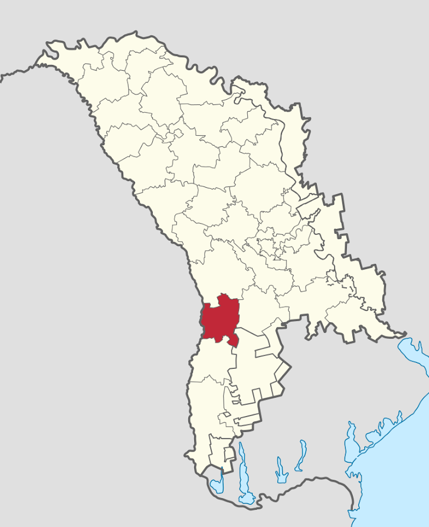

Sărățica Nouă
Satul Sărăţica Nouă este o localitate in Raionul Leova situata la latitudinea 46.5724 longitudinea 28.5483 si altitudinea de 79 metri fata de nivelul marii. Aceasta localitate este in administrarea or. Leova. Conform recensamintului din anul 2004 populatia este de 760 locuitori. Distanța directă pîna în or. Leova este de 34 km. Distanța directă pîna în or. Chişinău este de 55 km.
Comuna Sărățica Nouă este o comună din raionul Leova, Republica Moldova. Este formată din satele
Sărățica Nouă (sat-reședință) și Cîmpul Drept.
Conform datelor recensământului din 2014, comuna are o populație de 935 de locuitori.[2] La
recensământul din 2004 erau 1.170 de locuitori.